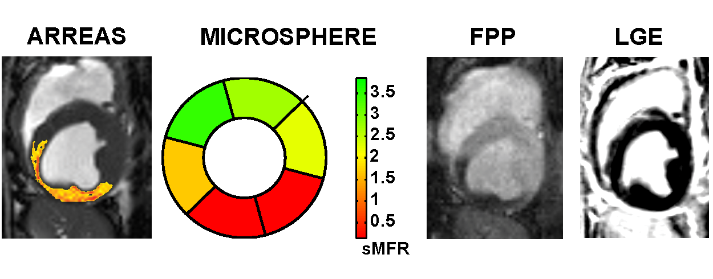
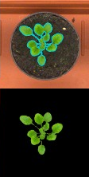

Research domains
While I have contributed to several research domains my mission is image analysis to help diagnose and understand disease and provide food for everyone.
The population increase exerts tremendous pressure on our healthcare systems and agricultural needs. Imaging methodologies are increasingly used to aid diagnoses and to build image-driven physiological models in the natural and life sciences. However, the explosion of the amount of data cannot be met by the current approaches used to analyze the generated images/volumes/movies and unravel the complicated patterns that exist. Our mission, is to address these limitations by integrating the state of the art in computer vision, machine learning, compression, and distributed infrastructures. Our unique approach has the potential to provide efficient and affordable solutions towards a sustainable healthcare system and agriculture, of immense benefit and importance to the society.
The population increase exerts tremendous pressure on our healthcare systems and agricultural needs. Imaging methodologies are increasingly used to aid diagnoses and to build image-driven physiological models in the natural and life sciences. However, the explosion of the amount of data cannot be met by the current approaches used to analyze the generated images/volumes/movies and unravel the complicated patterns that exist. Our mission, is to address these limitations by integrating the state of the art in computer vision, machine learning, compression, and distributed infrastructures. Our unique approach has the potential to provide efficient and affordable solutions towards a sustainable healthcare system and agriculture, of immense benefit and importance to the society.
Challenge 1: Population increase puts pressure on our healthcare systems

Every day thousands of people are born in the under-developed world without access to basic healthcare; while at the same time in the developed world, the population is aging with an increasing cost of access to good healthcare. We need new imaging and image analysis methods to help bring down the cost of image based diagnosis, and help unravel the mysteries behind several killer diseases.
In our unit we focus on cardiovascular imaging and particularly cardiac BOLD MRI. This technique has the potential to replace several other imaging modalities, since it does not require stress and contrast agents, and can simultaneously provide functional information of the mechanical status of the heart.
In a unique partnership and synergy, and the funding support of NIH, together with the group of Prof. Dharmakumar at Cedars-Sinai Medical Center and University of California at Los Angeles, we co-develop new cardiovascular MRI imaging techniques.
PRIAn is considered the only group in the world that innovates in the arena of computer aided diagnosis of cardiac BOLD MRI, with the goal of providing sophisticated and fully automated solutions to the problem of visualizing ischemia and extracting disease-related biomarkers.
By incorporating our recent experience in phenotyping of small animal brain MRI we want to also develop physiological cardiac models and atlases on the basis of cardiac cine BOLD MRI.
Challenge 2: Population increase puts pressure on our planet's sustainability and agricultural needs
Remarkably we seem to worry so much about our well being and health, but we are forgetting that without access to food and water, we cannot survive. The rapidly increasing human population combined with the "threat" of global warming, necessitate that we increase food production, reduce our carbon footprint, decrease waste and chemical pollution, and discover alternative sources of energy and materials.
Plants have always been a crucial source of food, feed, fiber, and fuel and thus the agriculture industry reflects a large portion of economic output. Together with the breeding industry, researchers try to identify, improve, and breed key traits to satisfy the growing demands, increase resistance to parasites and diseases, reduce environmental impact (less water, less fertilizer), always striving for a more sustained agriculture.
While sequencing the genome is becoming increasingly efficient, automated and affordable phenotype collection systems are arguably lagging behind present and future needs. With the funding support of the European Union of the PHIDIAS project, and the generous collaboration of the iPlant Collaborative, we will revolutionize the acquisition and analysis of plant images, for the purpose of phenotyping.
We built low cost sensors and cloud-based analysis that will bring phenotyping solutions to the masses, available at every research lab, at every corner of the world.
Our dream is to help researchers in the underdeveloped world, study and breed their native crops and flora, having access to the best technology advanced countries currently have.
PRIAn is one of the few groups in the world that marries its know-how in medical image analysis with the analysis of plant imagery. This way, we hope to accelerate the state of the art in plant phenotyping to unprecedented levels.